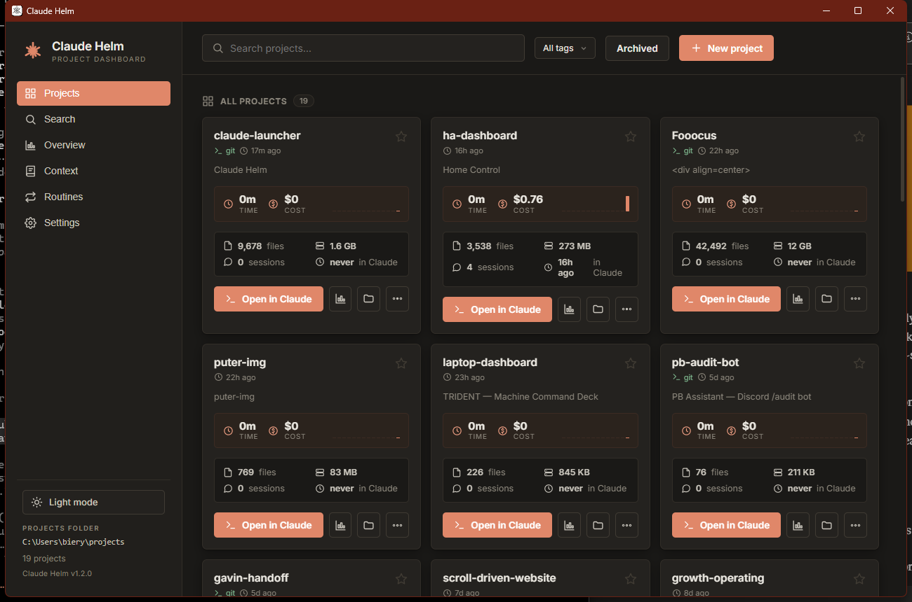
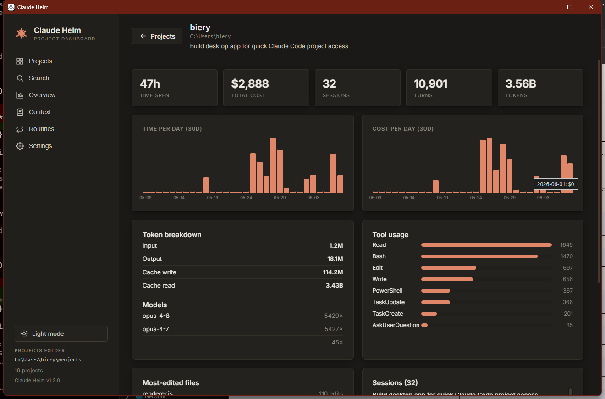
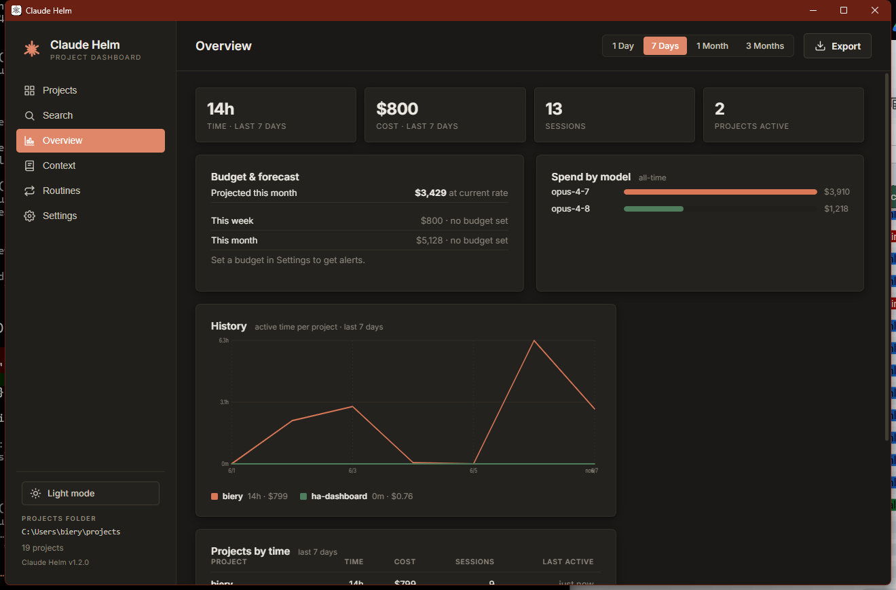
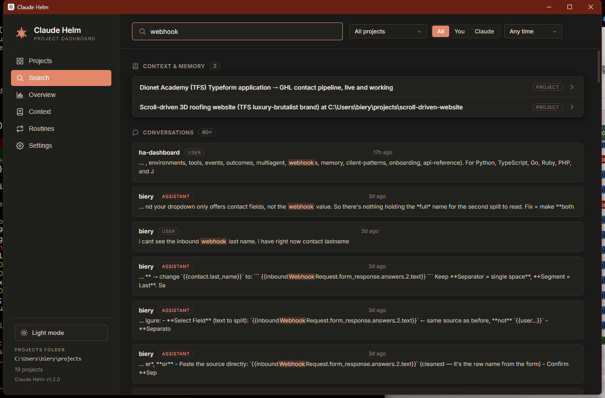
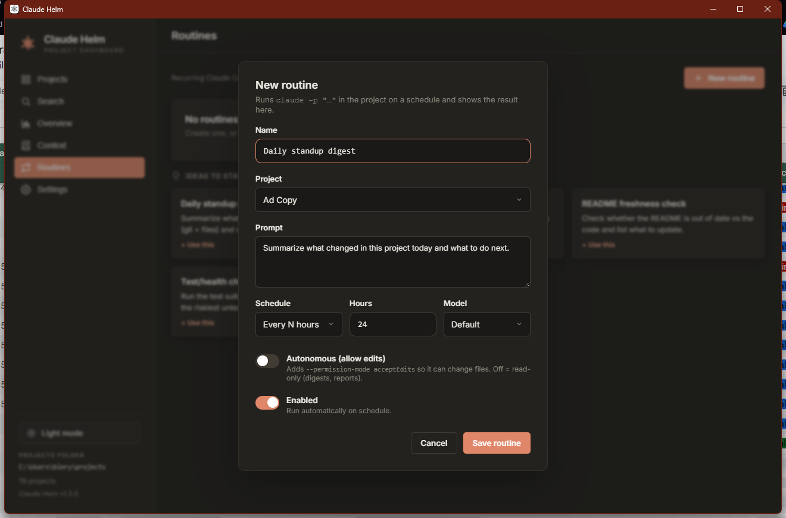
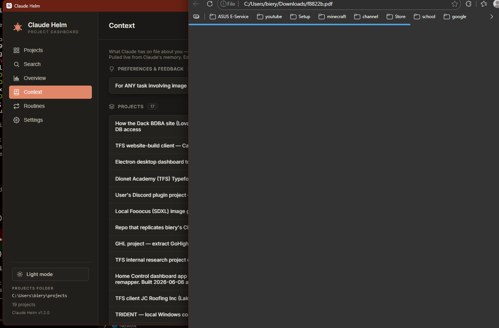

Monitor, search, and launch every project — time, cost, transcripts, and context, all in one place. It reads your local Claude history and runs entirely on your machine.

What it does
Claude Helm turns your local ~/.claude history into a real dashboard: how much time and money each project costs, what you worked on, and a one-click way to jump back in.
Open any project in a terminal already running claude — no cd, no setup. Pick a model per launch, open in your editor, and create new projects from the app.

A live engine reads every transcript and computes per project:

One search box across every conversation and your saved memory — highlighted snippets, filter by project, date, or role, then read the full transcript as a clean chat.

Recurring Claude Code tasks that run on their own — a daily standup digest, a weekly retro, a README freshness check. Each runs claude -p in a project and shows the result in the app. Read-only by default.

Your memory files and global CLAUDE.md, grouped into About you, Preferences, Projects, and References — so you always know the context Claude carries between sessions.

Download
Grab the latest release below. The apps aren't code-signed yet, so each OS shows a one-time "unidentified developer" prompt — that's expected.
Run the installer, then choose More info → Run anyway. Updates itself silently after that.
Download .exe →Apple Silicon and Intel .dmg builds. Right-click the app → Open the first time.